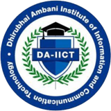

Rajviba S. Gohil
Dhirubhai Ambani Institute of Information and Communication Technology
Email: 201801446@daiict.ac.in
DOB: November 24,2000
Address: 43A,Shree Ram Society,Sardarnagar,Bhavnagar
EDUCATION
| Degree | University/Institute | Year | CPI/Aggregate |
|---|---|---|---|
| B.Tech | ICT | Dhirubhai Ambani Institute of Information and Communication Technology | 2018-Present | 7.35 |
| Higher Secondary | Class XII | Gyanmanjari Vidhyapith, Bhavnagar, Gujarat, [GSEB Board] | 2017-2018 | 97.02% |
| Secondary | Class X | KPES English School, Bhavnagar, Gujarat [GSEB Board] | 2015-2016 | 93% |
SKILLS
| Expertise Area/Area(s) of Interest | Data Structures and Algorithms |
| Programming Language(s) | C,C++,Basics of Python |
| Tools and Technologies | HTML,CSS,Postgres,Django(Basic) |
| Technical Electives | DBMS,OS,OOPs |
PROFESSIONAL EXPERIENCE/INTERNSHIPS
| Rural Internship. (PNR Society, Bhavnagar, Gujarat) | Gained knowledge of the working system of the NGO towards educating, curing and making
individuals self-dependent having any form of disability and helped the workers over there.
- Took a survey of all differently-abled people from all nearby villages. - Helped in management
of a medical camp conducted for a whole village.
- Visited schools of nearby village areas and helped in management for conducting hearing and
vision tests.
Guide: Prof Alka Parikh |
(Dec, 19– Jan, 20) Team Size - 15 |
| Summer Research Intership | - Analysis of Frequent Pattern Mining Market-based Model - Apriori algorithm
- Carried out a detail comparison of the classical Aprori algorithm and the YAFIM
algorithm Guide: Prof P M Jatt |
May-July,2021 Team Size -2 |
PROJECTS
| News Aggregator- Tagged News (Reddit Clone) Guide: Saurabh Tiwari |
Developed a website where everyone can:
- Create a post - Login/Logout - Update and comment on post - Update profile picture/personal information - Like/dislike posts - Karma points feature. - Goggle authentication to login/logout. |
Jan,21 - April,21 Team size - 10 |
| Insurance Database Management System Guide: Minal Bhise |
Insurance database system which handles
- different insurance policies - premiums of individual users - different type grant permissions (e.g Users only use the site) |
July - Oct 2020 Team Size-4 |
| A customer Helpdesk chatbot Guide: Hemant Ghelot |
A chatbot using IBM Services, capable of answering the questions without much human interference by using smart document understanding feature of Watson Discovery. | May, 20 - June, 20 Team Size -Individual |
POSITIONS OF RESPONSIBILITY
- Associate Member of Student Executive Council of DCEI | Media and Branding
- Co-ordinator | Concours'19 | (Annual Sport Fest)
- Co-ordinator | Synapse'20 | (The Annual Fest of DAIICT)
- Campus Designer | i.Fest'18 | (The Annual Tech fest of DAIICT)
AWARDS AND ACHIEVEMENTS
- Stood amongst top 10 students in 12th grade in Gujarat
- Got selected for mentorship program through Codess (Mar 2020)
INTERESTS AND HOBBIES
- Curious about learning new things and skills
- Event Management
- Reading
- Garba
- Art and Painting